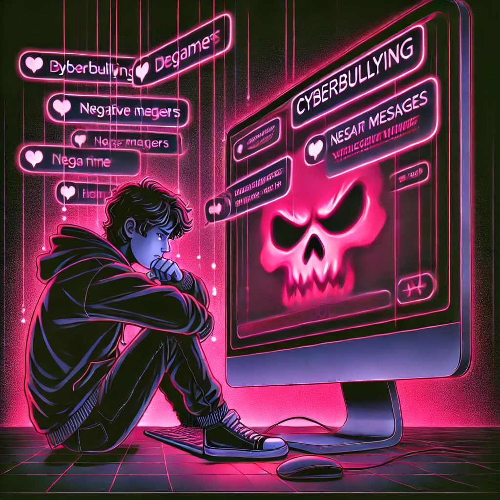

Интернет прочно вошел в нашу жизнь и сильно влияет на нас.
На этом сайте я расскажу все о влиянии социальных сетей на подростков: как соцсети влияют на учебу и личность учащегося и его жизнь в целом.
Положительное влияние социальных сетей на подростков
Прошло то время, когда социальные сети были местом, где люди только общаются и знакомятся.
Сейчас пользователи социальных сетей обмениваются информацией, получают новые знания и даже строят бизнес.
Подросткам соцсети тоже дают много преимуществ:
С помощью социальных сетей подростки общаются с единомышленниками из разных стран и городов. Так молодые люди расширяют свой круг общения и
находят новых друзей и знакомых. А подросткам-интровертам социальные сети помогают найти друзей и уйти от одиночества.
Благодаря социальным сетям подростки повышают свой уровень знаний по разным предметам и быстро получать нужную и интересную информацию.
Соцсети помогают подросткам в учебе. С помощью социальных сетей учащиеся обмениваются конспектами, электронными пособиями
лабораторными работами и другой полезной информацией для учебного процесса информацией.
Социальные сети помогают подросткам подрабатывать удаленно. Нкоторые учащиеся создают в соцсетях экспертные блоги, в которых делятся разного рода полезной
информацией. Этим они могут заработать деньги и даже начать строить свою карьеру.
Освоение цифровых технологий - соцсети помогают развивать навыки работы с контентом, графическими редакторами, видеомонтажом и маркетингом.
Участие в социальных инициативах - возможность волонтерства, сбора средств на благотворительность, участия в акциях.
Развития творческих навыков - подростки могут делиться своими работами (рисунками, текстами, музыкой) и получать обратную связь.
Отрицательное влияние социальных сетей на студентов
Несмотря на все плюсы соцсетей, у них есть и свои недостатки:
Главная опасность социальных сетей для молодежи - это реклама и пропаганда наркотиков и алкоголя.
Как правило, эти пагубные пристрастия подают в соцсетях в привлекательном и безопасным для здоровья виде, и молодым людям они кажутся не такими уж и плохими и даже безобидными.
Социальные сети часто используют мошенники для своих махинаций, и из-за недостатка определенного опыта и знаний их жертвами как раз часто и становятся подростки.
Всем известно, как затягивают социальные сети, и из-за этого у подростков может падать успеваемость. Порой, вместо того, чтобы готовиться к зачету,
подростки "провисают" в соцсетях и напросто убивают свое время, которое можно было потратить с пользой.
В социальных сетях трудно отфильтровать информацию и рекламу. Даже если подросток интересуется только определенной тематикой, в соцсетях будет все равно
вылазить другая информация, и из-за ее переизбытка человек больше утомляется и раздражается.
Иногда подростки заменяют реальное общение в соцсетях. Может доходить до того, что учащиеся становятся нелюдимыми и апатичными в реальной жизни,
что отрицательно сказывается на их психологическом состоянии.
Иногда социальные сети угнетают некоторых учащихся, и они начинают чувствовать себя неполноценными. В соцсетях зачастую показывают идеальную картинку, которая
совсем не похожа на реальность. Однако некоторые молодые люди ей верят и начинают сравнивать себя с кем-то другим, более красивым, умным, успешным и тд. От этого появляется уныние,
депрессивное состояние и порой даже суицидальные мысли.
Потеря навыков социального общения - из-за длительного пребывания в сети могут ухудшаться навыки ведения живого диалога.
Вред здоровью - длительное использование соцсетей приводит к ухудшению зрения, нарушениям осанки и проблемам со сном.
Зависимость от лайков и одобрения - подростки могут зацикливаться на количестве лайков и комментариев, что влияет на их самооценку.
Уменьшение мотивации к учебе и работе - соцсети отвлекают и снижают концентрацию, особенно если неь самодисциплины.
Кибербуллинг

Кибербуллинг - это запугивание и травля с использованием цифровых технологий. Он может проходить в социальных сетях, в приложениях для обмена сообщениями, на
игровых платформах и мобильных телефонах. Это повторяющиеся эпизоды, цель которых - напугать, разозлить или опозорить тех, кого преследуют. Например:
распространение ложной информации или размещение непристойных фотографий кого-либо в социальных сетях;
отправка оскорбляющих сообщений или угроз через платформы обмена сообщениями;
выдача себя за другое лицо и отправка непристойных сообщений от его имени.
Травля в реальной жизни и кибербуллинг часто могут происходить одновременно. Но интернет-травля оставляет цифровой след - запись, которая может оказаться полезной и стать доказательством, необходимым для прекращения запугиваний.
Зависимость
Симптомы зависимости от социальных сетей:
Постоянное желание проверять аккаунт в соцетях, даже в неподходящее время.
Увеличение времени, проводимого в соцсетях, за счет сна, работы или личных контактов.
Невозможность контролировать время, проводимое в соцсетях, и чувство тревоги при отсутствии доступа к ним.
Пренебрежение обязанностями, учебой, работой или семейными делами из-за активности в соцсетях.
Потеря интереса к другим формам общения и развлечений.
Снижение самооценки из-за сравнения с другими пользователями соцсетей.
Изменение настроения, раздражительность или депрессия из-за пребывания в соцсетях.
Как максимально использовать социальные сети во благо и сократить их негативное воздействие:
Как видите, у социальных сетей есть свои преимущества и недостатки. Я собрала для вас советы, которые помогут эффективно пользоваться соцсетями и при этом уменьшить
их негативные последствия:
Читайте и подписывайтесь преимущественно на полезные и экспертные страницы и сообщества.
Ограничьте себе время, которое вы будете проводить в социальных сетях. В настройках современных
телефонов можно ограничить время, которое пользователь будет проводить в определенном приложении.
Всю информацию, которую вы получаете из социальных сетей перепроверяйте, потому что соцсети - излюбленное место для мошенников.
Бережно относитесь к своим личным данным и не пишите о себе слишком много, потому что неизвестно,
кто и каким образом может использовать эту информацию.
Как помочь человеку с зависимостью от социальных сетей:
Будьте внимательными и поддерживающими: выслушивайте человека, помогайте ему выразить свои чувства и мысли.
Поддерживайте здоровые альтернативы: предложите проводить время вместе, занимаясь интересными и здоровыми досуговыми занятиями.
Поощряйте получение профессиональной помощи: поддерживайте человека в решении обратиться к специалистам и следовать их рекомендациям.
Обсуждайте возможность введения «цифрового детокса»: предложите установить правила использования социальных сетей и соблюдать их вместе.
Что делать, если вас преследуют в интернете?
Если вас преследуют в интернете, расскажите об этом взрослому, которому доверяете (родителям, родственникам, учителю или школьному психологу). Если сложно поделиться с близкими, можно позвонить на телефон доверия и поговорить с консультантом.
В социальных сетях заблокируйте обидчика и подайте жалобу администраторам – платформы обязаны защищать пользователей. Также сохраните доказательства (переписку, скриншоты постов) на случай разбирательства.
Сообщать о травле важно, чтобы остановить преследователя и показать, что такое поведение недопустимо. Если ситуация становится опасной, немедленно обращайтесь в полицию или службы экстренной помощи.
Исходя из всего написанного выше, можно сделать вывод: Социальные сети не несут в себе вреда, если пользоваться ими в меру.
ПОМНИТЕ! Активное общение в социальных сетях является лишь дополнением к полноценному живому общению.
Нужно уметь брать от социальных сетей только хорошее и отсеивать плохое!